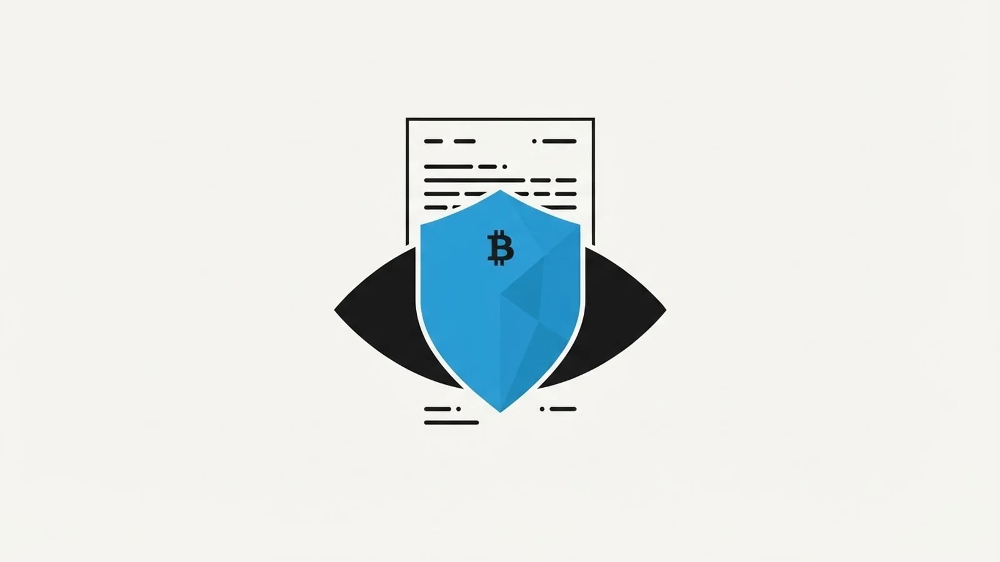

When you hand something to a third party — even an automated one — the first question a careful Bitcoiner asks is: what do they learn about me?
It's the right question. Traditional inheritance is a privacy disaster by design: a notary learns your identity, your family structure, your assets, and your heirs' identities, and all of it ends up in records that can be subpoenaed, leaked, or — in many jurisdictions — made public after probate. Custodial services are worse: they hold your coins and your data.
Bitcoin After Life was built to need no third party at all. But it does involve Will-Executor servers, so let's answer the privacy question precisely, without marketing fog: here is exactly what a Will-Executor can see, and what it cannot.
What a Will-Executor holds
A Will-Executor stores one thing: your signed, time-locked inheritance transaction. Nothing else travels to the server — no identity, no email, no account, no documents. The BAL plugin doesn't ask who you are, because the protocol doesn't need to know.
From that transaction, an executor — like anyone who inspects a raw Bitcoin transaction — can technically observe:
- The inputs: the specific UTXOs your inheritance will spend, and therefore the amount they contain.
- The outputs: your heirs' addresses, their shares, and the executor fee.
- The locktime: the delivery date after which the transaction becomes valid.
That is the complete list. Let's now look at the much longer list of what remains invisible.
What a Will-Executor cannot see
Your identity. There is no account system, no KYC, no registration. To a Will-Executor you are a transaction, not a person. Bitcoin addresses are pseudonymous by design — the server sees strings of characters, not names.
The rest of your wallet. The transaction reveals only the UTXOs it spends. Your other addresses, your total holdings, your transaction history beyond those specific coins: none of it is exposed by the protocol. The executor sees the inheritance, not your wealth.
Your heirs' identities. Heirs appear as addresses. A name, a face, a relationship — none of that is in a Bitcoin transaction, and none of it is in what BAL sends.
Your activity and your lifetime. Executors cannot tell whether you're alive, active, traveling, or simply quiet. The Check Alive mechanism that postpones your delivery date works through your own wallet — the server doesn't track you, ping you, or monitor you. There is no surveillance built into the protocol, because there is no need for any.
Any way to profit from what it sees. This is the crucial point. Even the limited information above is useless for abuse: the transaction is already fully signed, so it cannot be altered; it is time-locked, so it cannot be broadcast early; and its outputs are fixed, so not a single satoshi can be redirected. A Will-Executor that tried to front-run, censor, or manipulate would gain nothing — and would lose its fee, which is only paid when the inheritance executes exactly as written.
Privacy by architecture, not by policy
Most services protect your data with a privacy policy — a legal promise that can change with an acquisition, a subpoena, or a new CEO. BAL protects it with architecture: the protocol was designed so that the sensitive data never exists on the server in the first place.
| What traditional inheritance exposes | What BAL exposes |
|---|---|
| Your legal identity | Nothing — no accounts |
| Full inventory of your assets | Only the UTXOs in the transaction |
| Heirs' names and relationships | Heirs' addresses only |
| Family structure, stored in public records | Nothing — no records exist |
| Protected by: a privacy policy | Protected by: protocol design |
You cannot leak what you never collected.
Optional hardening for the privacy-conscious
The protocol's defaults are already strong, but Bitcoin hygiene adds another layer:
- Use fresh addresses for your heirs. Electrum generates new addresses freely; an address that has never appeared on-chain carries no history to analyze.
- Consider multiple executors. Splitting your will across several Will-Executors from the WeList is primarily a redundancy feature — but it also means no single server is your only counterparty.
- Review before you send. The plugin always lets you inspect the generated transactions before anything is transmitted. Verify the outputs yourself; trust is not required.
The honest summary
A Will-Executor sees one signed transaction: some addresses, some amounts, a date. It does not know who you are, what else you own, or who your heirs are — and the cryptography guarantees it can do nothing harmful even with what little it sees.
Compare that with the alternative: a folder in a lawyer's cabinet containing your name, your family's names, and the full list of what you own.
Inheritance used to require giving up your privacy to be safe. We built BAL so you could keep both.
Want the technical detail? The full protocol walkthrough is in the manual, and both the plugin and the server are open source — verify, don't trust.